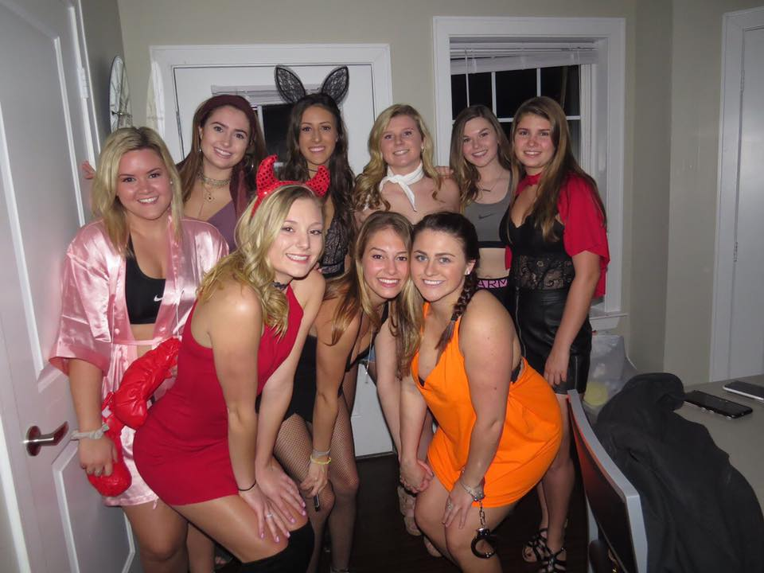

Before coming to the University of Maine I was pretty nervous because it is a good distance away from home. I now grew to love the school and I have met so many amazing people.
I am so happy with all the friends that I have made since I've been here. I have already made so many amazing memories with them.
Attending Umaine gave me so many opportunities to visit many beautiful places, my favorite was definitely Acadia.